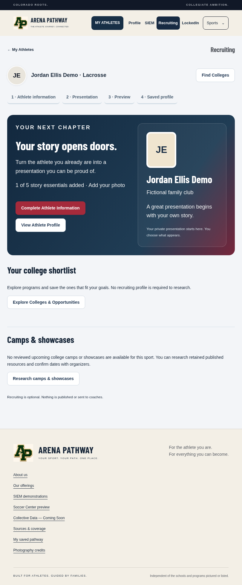
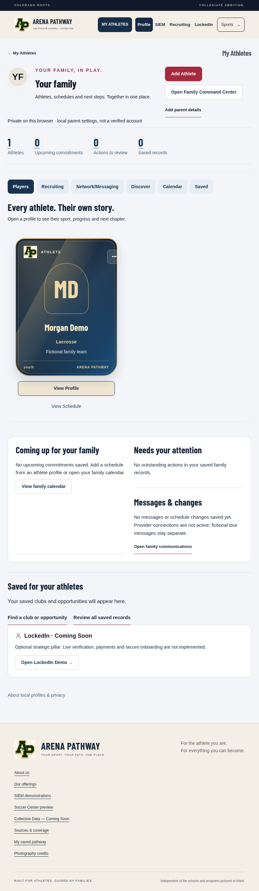
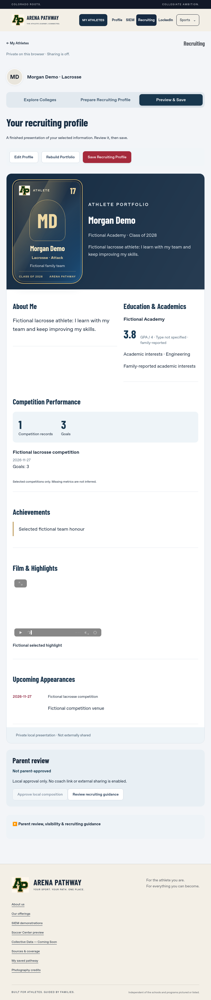

Actual before/after browser evidence — fictional records; founder acceptance pending.



 Parent athlete identity
Parent athlete identity Full portfolio during preparation
Full portfolio during preparation Finished / saveable presentation
Finished / saveable presentation